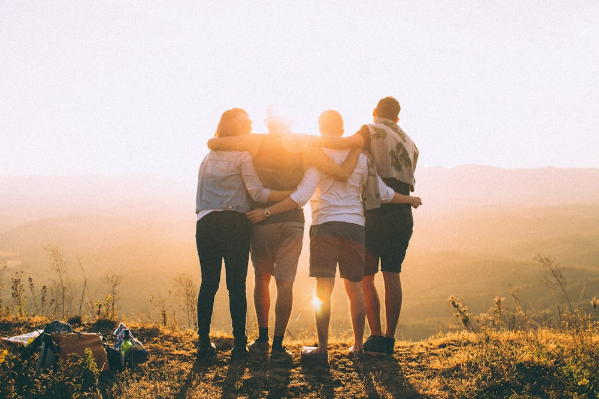
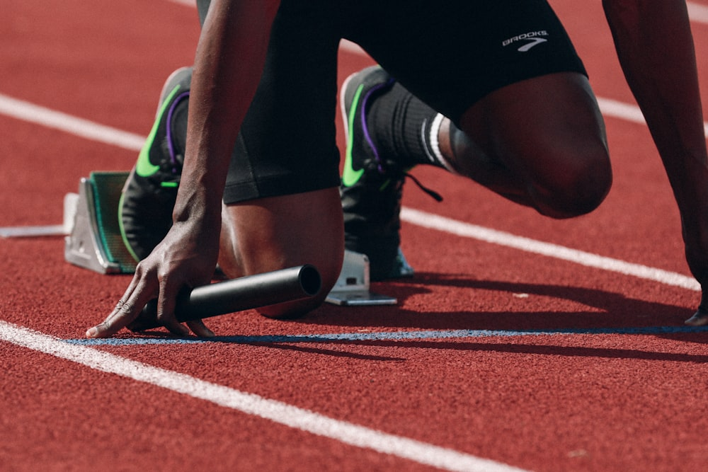

Karya kolosal siswa Libels yang menjadi salah satu pentas seni dan turnamen pelajar paling dinanti di Surabaya.

Pentas seni megah tahunan persembahan siswa SMAN 15 Surabaya yang menampilkan teater musikal, tarian nusantara, paduan suara Libels Voice, dan bintang tamu musisi papan atas nasional di gedung pertunjukan ternama Jawa Timur.

Kompetisi olahraga dan seni bergengsi antar SMA/SMK se-Jawa Timur yang mempertandingkan cabang bola basket, futsal, tari modern, hingga fotografi jurnalistik dengan menjunjung tinggi nilai sportivitas.
Keluarga supporter kreatif SMAN 15 Surabaya yang setia mendampingi tim basket dan tim tari Libels di kejuaraan DBL Surabaya. Terkenal dengan aksi koreografi 3D raksasa dan chant bersemangat tanpa anarki.
Organisasi Siswa Intra Sekolah (OSIS) dan Majelis Permusyawaratan Kelas (MPK) SMAN 15 Surabaya adalah wadah resmi pengembangan jiwa kepemimpinan, integritas, dan manajerial siswa.
Di bawah bimbingan Wakil Kepala Sekolah Bidang Kesiswaan (Faizin, S.Pd.I, M.Pd.I) dan tim pembina, OSIS mengelola seluruh program kerja kesiswaan, kepedulian sosial, bakti sosial ramadhan, hingga perhelatan event akbar.
Lebih dari 28 kegiatan ekstrakurikuler yang dapat dipilih siswa untuk mengasah bakat dan menorehkan prestasi.
Deretan medali dan penghargaan yang diraih siswa SMAN 15 Surabaya dalam kompetisi seni dan olahraga.
Meraih posisi terhormat dalam kompetisi basket pelajar terbesar Indonesia, DBL East Java Series di DBL Arena Surabaya.
Juara Festival dan Lomba Seni Siswa Nasional (FLS2N) cabang Paduan Suara tingkat Provinsi Jawa Timur.
Meraih Juara Umum Lomba Keterampilan Baris Berbaris (LKBB) tingkat SMA/SMK se-Jawa Timur.